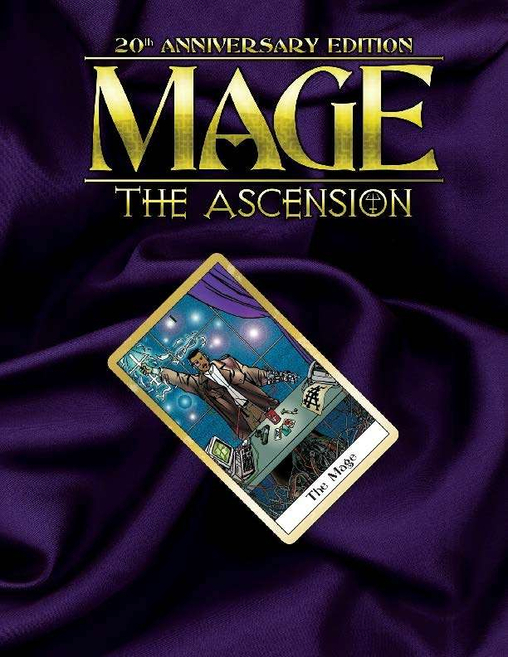

Este sistema fue creado por Mark Rein-Hagen para White Wolf Publishing. En un inicio, se publicó como una serie de 5 manuales que fueron publicados uno al año entre 1991 y 1995. Estos juegos fueron (en orden): Vampiro: La Mascarada, Hombre lobo: El Apocalipsis, Mago: La Ascensión, Wraith: El Olvido y Changeling: El Ensueño y se unieron 3 más en los siguientes años: Momia: La Resurrección, Cazador: La Venganza y Demonio: La Caída. En todos estos juegos, excepto Cazador, los personajes son seres no-humanos. La ambientación de este sistema es en el mundo parecido al actual, pero dominado por seres sobrenaturales que caminan entre nosotros y manipulan nuestras vidas de formas que no nos imaginamos y sin saberlo.
Usualmente las campañas de WoD se centran más en historia que en lucha y el objetivo suele ser la resolución de un conflicto que el Narrador propone a la mesa. La creación de personajes es un poco más compleja que en otros sistemas (como Fate, que está en otra sección), pero sin ser tan detallada como D&D. Para las tiradas, se utilizan dados de 10 caras en las que los resultados sobre 8 son éxitos y los 10 repiten, con la posibilidad de sacar nuevos éxitos y se miden en la cantidad de dados que se obtuvieron con resultado superior a 8. Los dados que se lanzan se determinan de acuerdo a la dificultad de la tirada y el Narrador te dirá si pierdes o ganas algún dado y la cantidad de éxitos que necesitas antes de realizarla. Si, por ejemplo, en una tirada de 5 dados con dificultad 3, obtengo 3 éxitos (caras sobre 8), conseguí realizar lo que quería de forma exitosa, si saqué 4 éxitos, entonces no solo lo conseguí, si no que podré obtener un bono y así sucesivamente. Si, por el contrario, saco una cantidad alta de dados 8 o menos, sobre todo si conseguí varios 1, la tirada no solo no será exitosa, sino que también tendrá consecuencias negativas en la historia.
Publicado el 2008, en Hunter eres un humano que conoce la existencia de seres sobrenaturales viviendo entre nosotros y tu objetivo es cazar a aquellos seres que dañan de alguna forma el mundo humano.
Publicado en 1991, en Vampiro se exploran los conceptos de humanidad, des-humanidad, moralidad, in-moralidad y otros temas similares desde tu visión de vampiro que navega en las aguas mortales, escapando de cazadores de vampiros y luchando con otros clanes y otros seres no humanos.
Publicado en 1992, en este juego eres un Garou (hombre lobo) que lucha contra el Wyrm, que es una fuerza del mal que busca provocar el Apocalipsis. El Wyrm puede encontrarse en otros hombres lobo, vampiros y otros seres e incluso en seres humanos y tu misión es acabar con ellos.
Publicado en 1993, como su nombre lo indica, eres un ser humano que descubre por algún motivo (Lo que es capaz de hacer magia que llaman “El despertar”). El conflicto central en este juego, a diferencia de los otros, es entre distintas facciones de magos que buscan dominar el mundo “mágico”. Estas facciones dependen del tipo de magia que utilizan, ya sea la noción más tradicional o más involucrada con tecnologías, entre otras.
